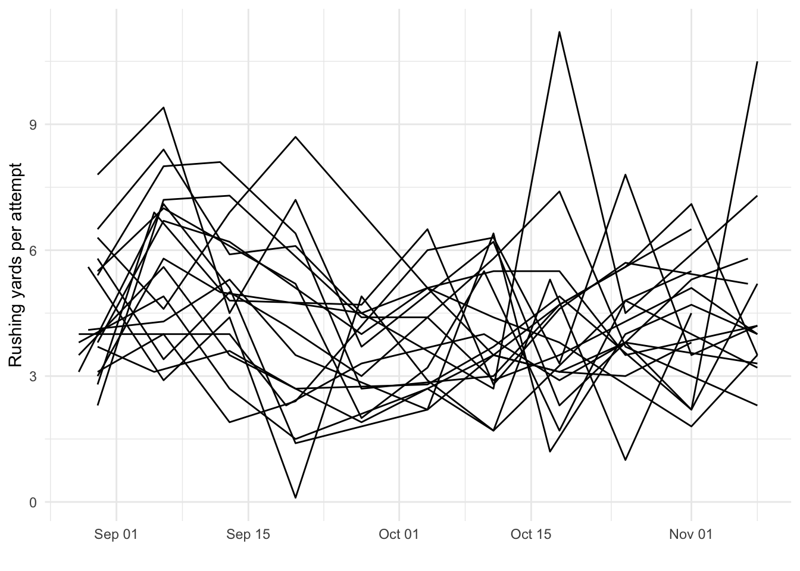
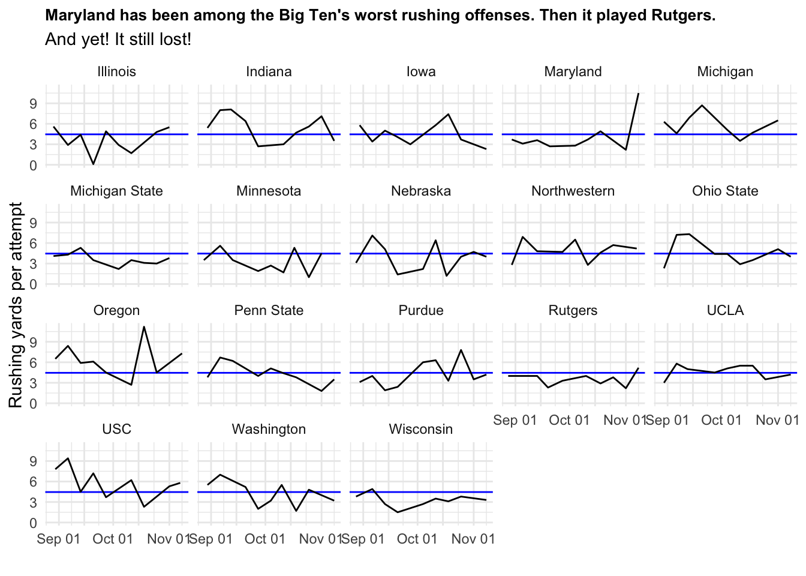
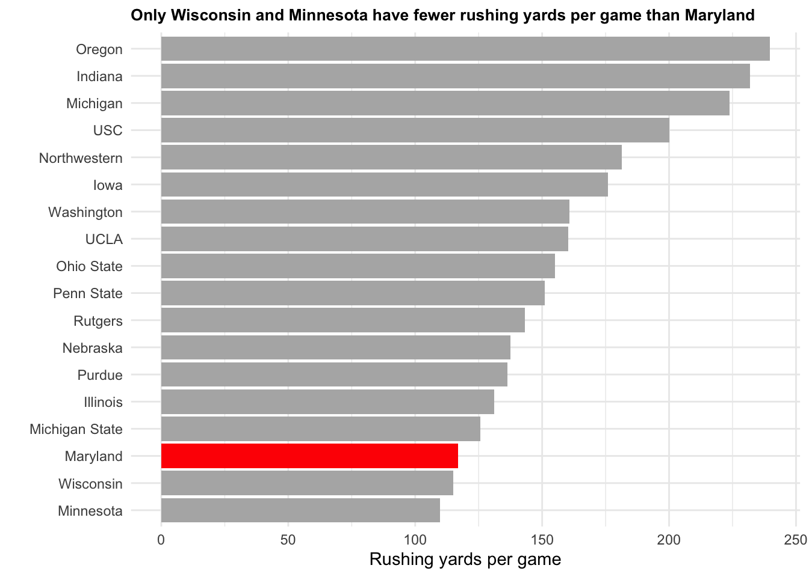

Rows: 1255 Columns: 77
── Column specification ────────────────────────────────────────────────────────
Delimiter: ","
chr (9): Location, Opponent, Result, OT, TeamURL, Outcome, Team, Conferenc...
dbl (64): Rk, Gtm, Points, PointsOpp, PassCmp, PassAtt, PassPct, PassYds, P...
lgl (3): Score, TeamScore, OpponentScore
date (1): Date
ℹ Use `spec()` to retrieve the full column specification for this data.
ℹ Specify the column types or set `show_col_types = FALSE` to quiet this message.
Code
bigten <- logs |>filter(Conference =="Big Ten Conference")ggplot() +geom_line(data = bigten,aes(x = Date, y = RushYA, group = Team) ) +labs(x ="",y ="Rushing yards per attempt" ) +theme_minimal()

Code
bigten_avg <- bigten |>summarise(bigmeanrush =mean(RushYA)) |>pull(bigmeanrush)ggplot() +geom_hline(yintercept=bigten_avg, color="blue") +geom_line(data = bigten,aes(x = Date, y = RushYA, group = Team) ) +labs(title ="Maryland has been among the Big Ten's worst rushing offenses. Then it played Rutgers.",subtitle ="And yet! It still lost!",x ="",y ="Rushing yards per attempt" ) +scale_x_date(guide =guide_axis(check.overlap =TRUE)) +facet_wrap(~Team) +theme_minimal() +theme(plot.title =element_text(size =10, face ="bold") )

After its worst rushing performance of the season against Indiana, Maryland’s running game made a significant rebound a week later against Rutgers. And yet, it didn’t change the game’s ultimate result.
Against Indiana, Maryland rushed for 37 yards on 17 attempts, or 2.2 yards per carry. The Terps lost that game 55-10. Against Rutgers the next week, Maryland had a 377.3% increase in yards per carry up to 10.5 yards per carry on 29 attempts. It was Maryland’s best rushing average, well, ever.
Maryland itself reported the mark tied a previous single-game program record set in 1950. Maryland beat Virginia Tech that day 63-7. Virginia Tech went 0-10 that season. This was also the first time Maryland went over 300 rushing yards as a team since 2019 and the most rushing yards it had in a Big Ten game since 2018.
But Maryland STILL lost to Rutgers 35-20. In other words, Maryland had a record-setting rushing performance and lost by 15 points.
How is that possible?
It’s somewhat simple: Maryland’s defense was horrible. Maryland’s rushing defense in general has been quite poor this year. Its allowing 165.9 rushing yards per game. That’s worse than Purdue, Northern Illinois, Akron, Southern Miss and Syracuse. Against Rutgers, Maryland allowed 256 rushing yard, and another 229 through the air. Maryland had 403 yards of offense for the game and still was out-gained by 82 yards. While freshman quarterback Malik Washington had 164 rushing yards (including a 73-yard touchdown run), he only passed for 98 yards on 28 attempts and threw an interception.
Maryland’s performance against Indiana can be excused to an extent. The Hoosiers have the sixth best rushing defense in the country, and its performance against Maryland was the second fewest yards per carry it allowed against a power conference opponent this season. But Indiana has won so many games by such massive margins that many of its opponents have had to abandon the run entirely. Indiana has held eight of ten teams its played under 100 rushing yards. While Maryland’s rushing performance against Indiana was bad, it could always be worse. Illinois managed two rushing yards against Indiana in a 53-point loss. Not two yards per carry, but just two yards. Total.
Even in that context, it’s still Maryland’s game against Rutgers that is the anomaly for its rushing offense, not the Indiana game. Maryland is the third worst team in the Big Ten this year in rushing yards per game.
Code
bigten |>group_by(Team) |>summarise(RushYds =mean(RushYds) ) |>arrange(RushYds) |>ggplot() +geom_col(aes(x =reorder(Team, RushYds), y = RushYds, fill = Team =="Maryland") ) +scale_fill_manual(values =c("TRUE"="red", "FALSE"="gray70")) +coord_flip() +labs(title ="Only Wisconsin and Minnesota have fewer rushing yards per game than Maryland",x ="",y ="Rushing yards per game" ) +theme_minimal() +theme(legend.position ="none",plot.title =element_text(size =10, face ="bold") )

Rutgers defense has been extremely poor this season which should have provided a necessary bounce-back. Rutgers also allowed Oregon to go about 11 (ELEVEN!) yards per carry earlier this season. To get back to a bowl game, that was a game Maryland essentially had to win. At minimum, it needed a confidence boost after the 45-point loss at home on homecoming to Indiana.
Maryland has now lost five consecutive games after starting 4-0. To reach a bowl game, it must win two out of three games against Illinois, Michigan and Michigan State. Michigan and Illinois are both comfortable favorites against Maryland.
What has caused Maryland’s season to spiral?
Before its historic but unfruitful rushing performance against Rutgers, Maryland had had been consistently under the Big Ten average in rushing yards per attempt. What’s been equally poor is Maryland’s rush defense. Albeit against lesser competition, Maryland only allowed one team to eclipse 100 rushing yards during its 4-0 start. Since then? Maryland has allowed nearly 225 rushing yards per game. That’s the second worst mark among Power 4 teams and sixth worst nationally of any team after its first four games.
The only power conference team worse than Maryland is Rutgers. And the Terps couldn’t even take advantage of that.